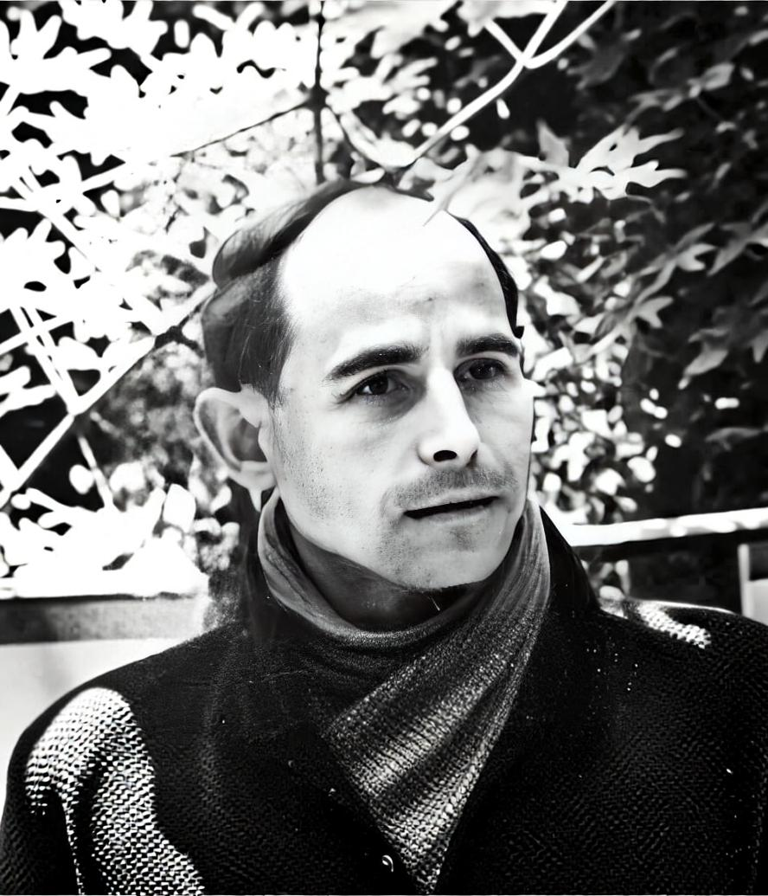
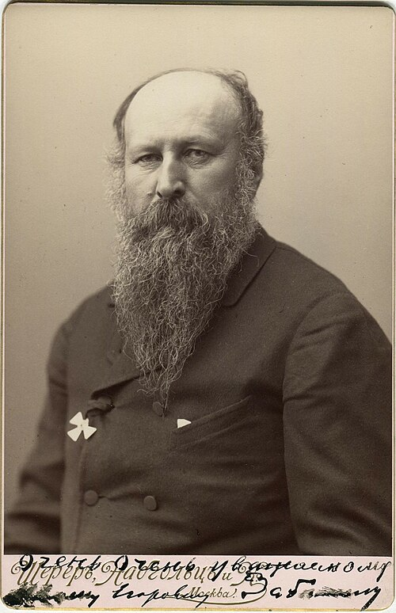
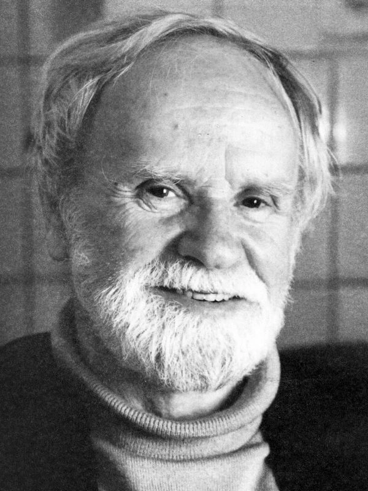
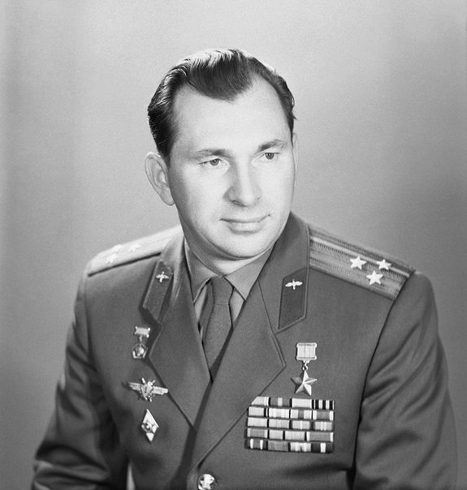
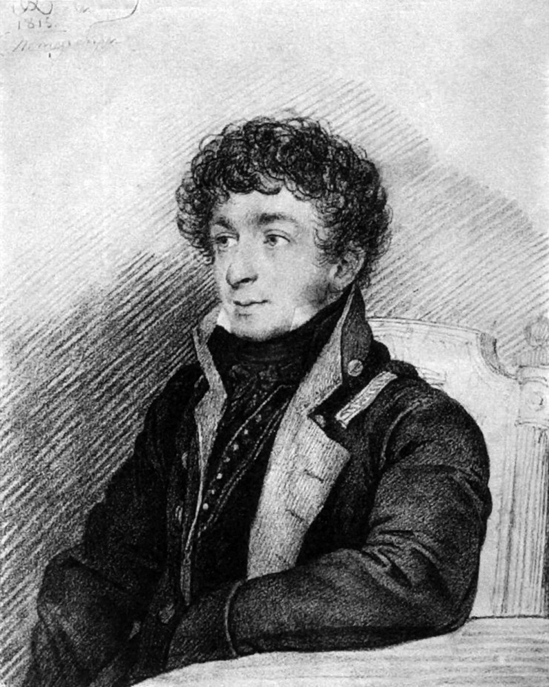
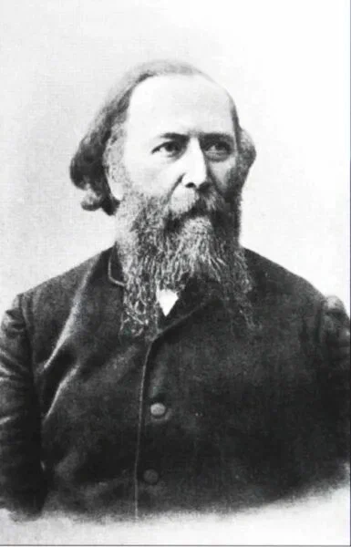
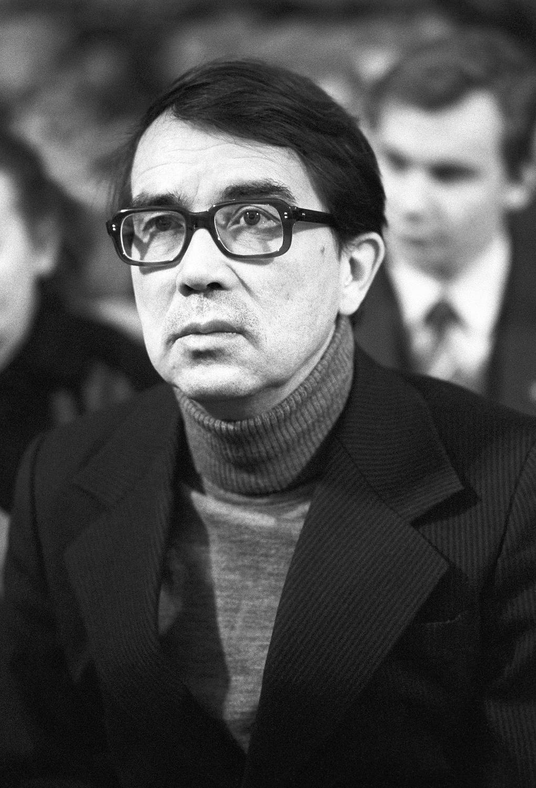
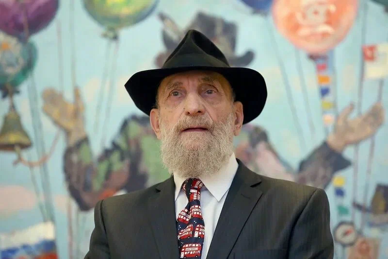
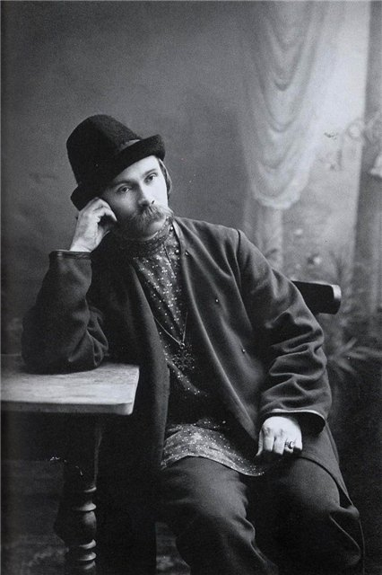

Николай Рубцов
ПоэтТонкий лирик, чьи стихи стали душой северной деревни. Его поэзия наполнена искренностью и глубокой любовью к «тихой родине».
ПодробнееНаш край стал колыбелью для многих талантов, чьи имена известны далеко за пределами России. Поэты, художники и изобретатели — все они черпали вдохновение в суровой, но прекрасной северной природе.

Тонкий лирик, чьи стихи стали душой северной деревни. Его поэзия наполнена искренностью и глубокой любовью к «тихой родине».
Подробнее
Уроженец Череповца, ставший величайшим баталистом мира. Он изображал войну не ради славы, а ради мира.
Подробнее
Выдающийся инженер, создавший легендарные самолеты. Его штурмовик Ил-2 стал самым массовым боевым самолетом в истории.
Подробнее
Один из крупнейших мастеров «деревенской прозы». Его произведения «Привычное дело» и «Лад» стали классикой, описывающей быт и мудрость северного крестьянства.
Подробнее
Герой Советского Союза, командир космического корабля «Восход-2». Под его руководством был осуществлен первый в истории выход человека в открытый космос.
Подробнее
Выдающийся поэт начала XIX века, чьё творчество оказало огромное влияние на молодого Пушкина. Последние годы жизни провел в Вологде, став частью её культурного кода.
Подробнее
Создатель индустрии молочного хозяйства в России. Именно он разработал метод получения масла с уникальным «ореховым» вкусом, которое сегодня известно всему миру как Вологодское.
Подробнее
Народный артист РСФСР, чье творчество стало музыкальным символом Вологодчины. Его произведения глубоко национальны и пронизаны интонациями русской народной песни.
Подробнее
Выдающийся живописец и график, мастер портрета и пейзажа. Его творчество пронизано жизнеутверждающей силой, а работы хранятся в крупнейших музеях России, включая Третьяковскую галерею.
Подробнее
Самобытный поэт, «песнопевец» северного крестьянства. Его творчество — это удивительный синтез народной культуры, глубокой духовности и дохристианских мифов северной земли.
Подробнее